08/03/2021 — Sóng T de Winter không phải là một tình trạng điện tâm đồ ổn định. Sóng T dương trong OMI thành sau khác biệt với sóng de Winter.
Bản dịch tiếng Việt của bài "De Winter’s T-waves are Not a Stable ECG condition. Upright T-waves in Posterior OMI are Distinct from de Winter’s waves." – Dr. Smith’s ECG Blog. Giữ nguyên toàn bộ 14 hình ảnh của bản gốc.
Bài này vừa được đăng trên JAMA Internal Medicine:
The de Winter Electrocardiogram Pattern Evolving From Hyperacute T Waves (Hình ảnh điện tâm đồ de Winter tiến triển từ sóng T tối cấp)
Nó nhắc tôi rằng nhiều người tin, do những khẳng định trong bài báo gốc của de Winter, rằng sóng de Winter là ổn định.
Thực tế, tiêu đề bài là “Sóng T “tối cấp” dai dẳng ở chuyển đạo trước tim báo hiệu tắc đoạn gần động mạch liên thất trước.” Các tác giả dựa ý tưởng về tính dai dẳng này chủ yếu vào cảm nhận của họ, chứ không dựa trên một đánh giá chặt chẽ có ghi các điện tâm đồ liên tiếp thường xuyên ở tất cả bệnh nhân có sóng T de Winter.
Nhưng sóng de Winter không ổn định.
Tôi đã gặp ít nhất một tá ca có sóng T de Winter và phần lớn chúng không ổn định mà tiến triển thành 1) sóng T tối cấp (không có ST chênh xuống) hoặc thành 2) ST chênh lên, hoặc chúng xuất hiện sau ST chênh lên ban đầu hay sau sóng T tối cấp.
Khó nói liệu chúng có LUÔN LUÔN biến đổi hay không, bởi vì mỗi khi gặp một ca, tôi kích hoạt phòng thông tim (cath lab) ngay lập tức và động mạch được mở thông mà chưa hề ghi các điện tâm đồ liên tiếp.
Đây là một ca bệnh nhân tôi đã khám. Anh ấy 30 mấy tuổi, đau ngực.
Điện tâm đồ trước viện:

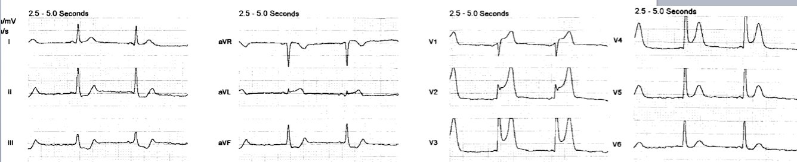
STEMI trước-bên rõ ràng (tắc LAD đoạn gần)
Phòng thông tim đã được nhân viên cấp cứu ngoài viện kích hoạt từ trước viện.
Chúng tôi ghi thêm một điện tâm đồ:

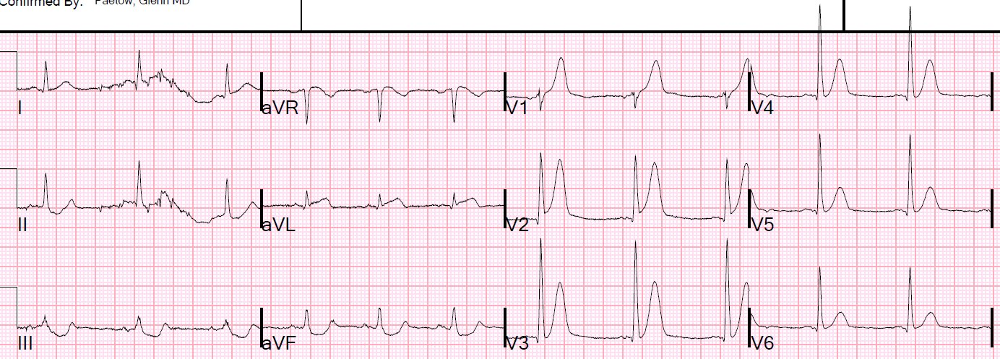
ST chênh lên ở thành trước phần lớn đã hồi phục và giờ chủ yếu là sóng T tối cấp
STE ở thành bên cao vẫn còn
30 phút sau, ngay trước khi kíp thông tim đến, chúng tôi ghi điện tâm đồ này:

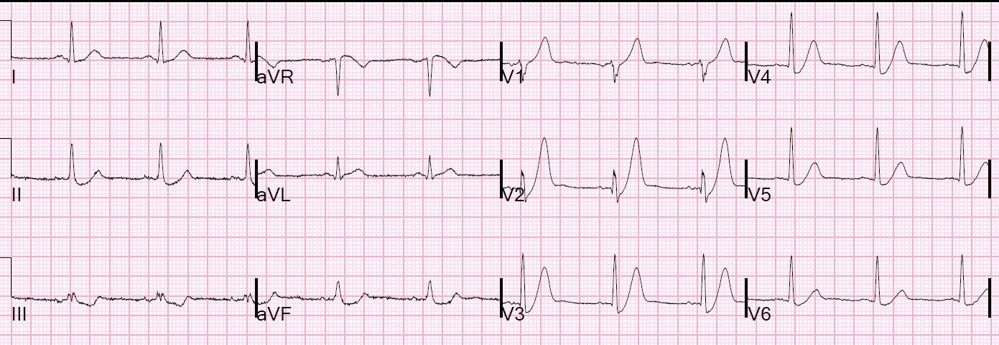
Sóng T de Winter kinh điển
Bình luận: Tôi thường xuyên được gửi các điện tâm đồ nhồi máu cơ tim thành sau (với ST chênh xuống ở thành trước) được trình bày như là các ca sóng T de Winter.
Đôi khi khó phân biệt chúng, nhưng phần lớn, sóng de Winter lớn hơn nhiều (béo và “đầy đặn” (bulky), giống sóng T tối cấp) so với sóng T của nhồi máu cơ tim thành sau (cũng có thể có ST chênh xuống kèm sóng T dương — chúng tôi đã đặt 3 ca như vậy ở tận phía dưới cùng)
Chụp mạch vành:
Cho thấy tắc 100% LAD đoạn giữa.
Troponin I (thế hệ hiện hành) đỉnh là 101,0 ng/mL (tương đương 101.000 ng/L với xét nghiệm độ nhạy cao, và là một nhồi máu cơ tim rất lớn).
Siêu âm tim ngay lúc đó:
EF 35% với rối loạn vận động thành trước, vách và mỏm
Siêu âm tim giai đoạn hồi phục, 2 tháng sau:
Tốt hơn, EF tăng lên 45-50%
Tôi đã đăng ca này vào năm 2014:
Is the LAD really completely occluded when there are de Winter’s waves? (Có thật LAD tắc hoàn toàn khi có sóng de Winter?)
Một nam giới 30 mấy tuổi than đau ngực sau xương ức dữ dội đột ngột.
Anh được đưa gấp vào khu hồi sức, nơi họ ghi điện tâm đồ này:

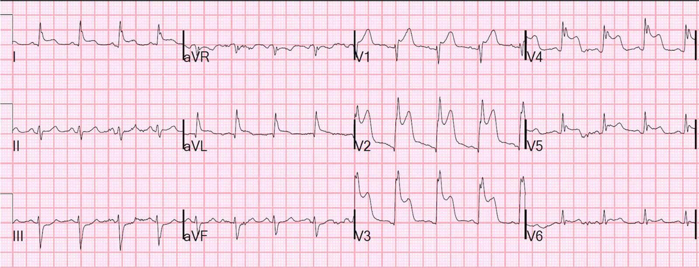
STEMI trước-bên rõ ràng do
tắc LAD đoạn gần (đoạn gần vì nó ở phía gần so với nhánh chéo
thứ nhất, gây STEMI thành bên cao với ST chênh lên ở I, aVL
và ST chênh xuống soi gương ở các chuyển đạo dưới)
Phòng thông tim được kích hoạt, và ngay trước khi lên phòng thông tim (19 phút sau điện tâm đồ đầu tiên), điện tâm đồ này được ghi:

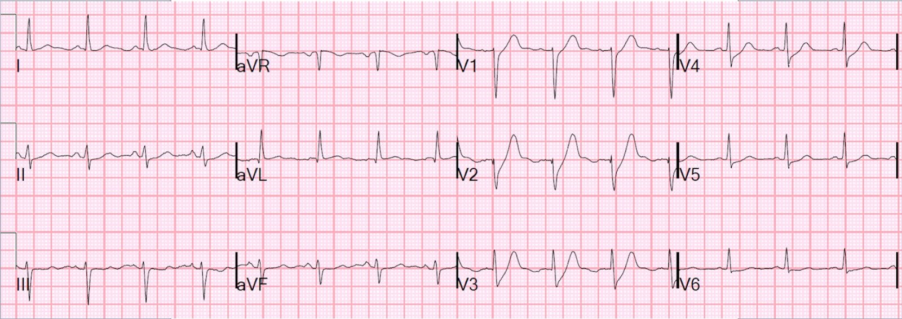
Có sóng T de Winter (ST chênh xuống với đoạn ST dốc lên và sóng T tối cấp).
Tôi vẫn thường tự hỏi liệu sóng T de Winter có thật là do tắc
hoàn toàn, hay do tắc gần hoàn toàn mức độ nặng. Có lẽ chúng phản ánh một
động mạch còn mở với dòng chảy tối thiểu và thiếu máu cục bộ dưới nội tâm mạc nặng, nhưng
không phải thiếu máu cục bộ dưới thượng tâm mạc toàn bộ.
Vì ACS rất động, với huyết khối liên tục hình thành và tự tiêu,
và vì điện tâm đồ và chụp mạch vành hiếm khi được thực hiện đồng thời, rất
có thể sóng T de Winter được ghi lại trong một khoảng thời gian mà
động mạch chỉ vừa đủ mở.
Chụp mạch vành:
Tổn thương hẹp 99% còn chút dòng chảy.
Đây là điện tâm đồ đầu tiên sau thông tim, ngay sau khi mở thông.

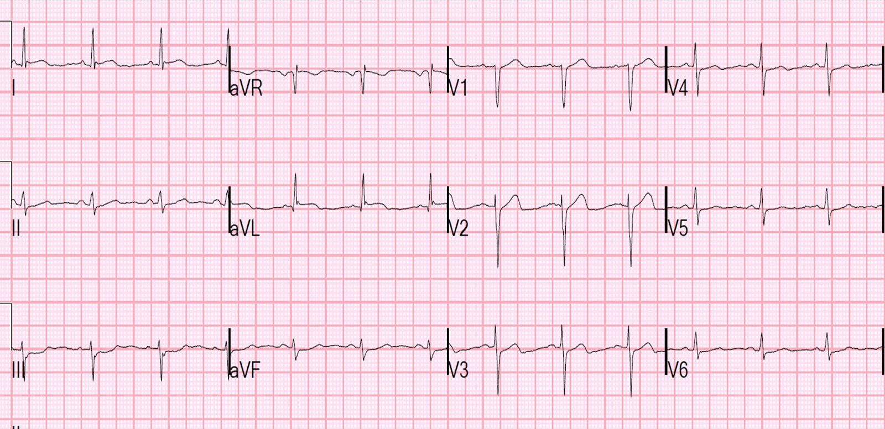
(QTc = 383). ST chênh xuống dai dẳng ở V2, V3.
Bây giờ có sóng Wellens rất kín đáo.
Đây là điện tâm đồ ngày hôm sau:

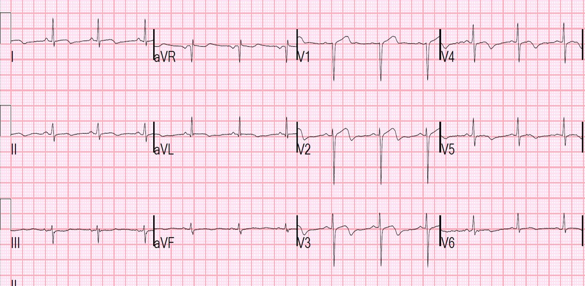
Hình ảnh sóng T tái tưới máu đầy đủ, tương tự sóng Wellens
Bình luận của Meyers: Trong kinh nghiệm ngắn hơn của tôi với sóng de Winter, tôi đồng ý rằng chúng luôn luôn động. Hãy xem ca sau đây, một bệnh nhân có sóng T de Winter (ca này không có nhiều ST chênh xuống) giữ nguyên hình dạng mà không tiến triển “lên” hay “xuống” trong ít nhất 30 phút (tôi đã ghi có lẽ 20 điện tâm đồ nhằm chứng minh cho một bác sĩ tim mạch còn do dự thấy diễn tiến thành STEMI, và tất cả đều giống hệt nhau trong suốt thời gian đó, không có STE hay bất kỳ thay đổi nào). Đây là lần kéo dài lâu nhất mà tôi từng ghi nhận được một sóng T tối cấp không đi “lên” hay “xuống”. Dĩ nhiên, điện tâm đồ sau thông tim đã thay đổi rất nhiều. Khoảng thời gian dài nhất tôi từng thấy một sóng T tối cấp giữ nguyên hình dạng mà không có bất kỳ ST chênh lên nào (kể cả STE kín đáo) là khoảng 30 phút. Theo tôi, hoàn toàn không phù hợp khi dùng từ “dai dẳng” cho sóng T tối cấp.
Đau vai sau khi nâng một chiếc hộp nặng

Sóng de Winter — chúng giữ ổn định trong 30 phút với nhiều điện tâm đồ. Nhưng chúng tôi thấy điều này là bất thường.
OMI thành sau trông rất khác sóng de Winter
Đây là một ca de Winter có thể bị nhầm với nhồi máu thành sau:
Đau ngực và ST chênh xuống ở chuyển đạo trước tim, rồi hồi phục, sau đó là một nhịp QRS rộng

Đây là sóng T de Winter, không phải OMI thành sau. Hãy để ý chúng “béo” và “đầy đặn” thế nào, nhất là ở V5 và V6.
Thành sau

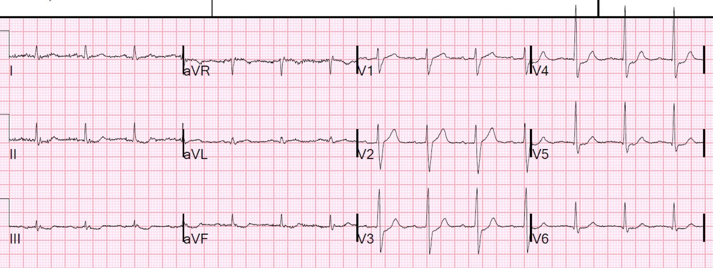
OMI thành sau — trông không giống sóng de Winter!!

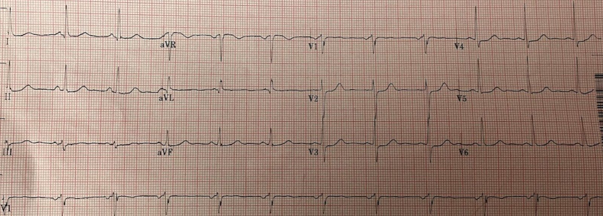
Một OMI thành sau khác — trông không giống sóng de Winter!!
Bình luận của Meyers #2: Tôi được nhắn tin điện tâm đồ của ca sau đây kèm câu hỏi “de Winter?” và tôi trả lời rằng đó là OMI thành sau. Tôi hiểu vì sao mọi người bối rối, nhưng chúng rất khác nhau.
Một nam giới trung niên có ST chênh xuống và một cửa sổ cơ hội hẹp

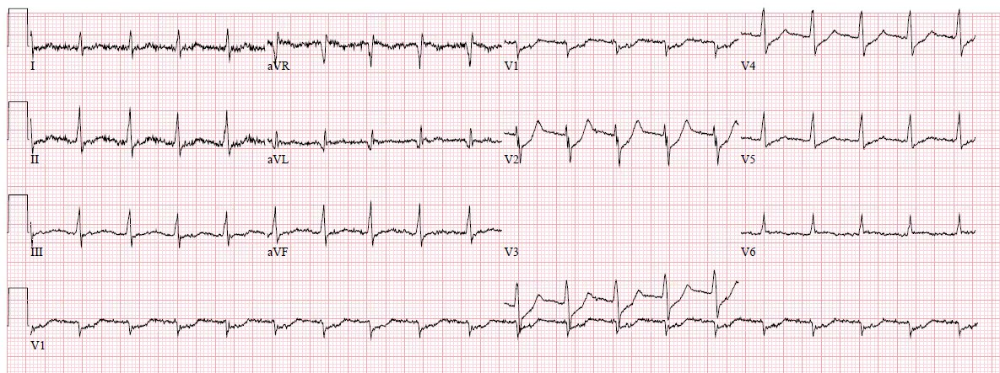
Đây là OMI thành sau, KHÔNG phải sóng T de Winter. Chúng quá hẹp!
Sóng T tái tưới máu thành sau cũng có thể giống sóng de Winter — nhưng trông khác!
Interventionalist at the Receiving Hospital: “No STEMI, no cath. I do not accept the transfer.” (Bác sĩ can thiệp ở bệnh viện tiếp nhận: “Không có STEMI thì không thông tim. Tôi không nhận chuyển viện.”)

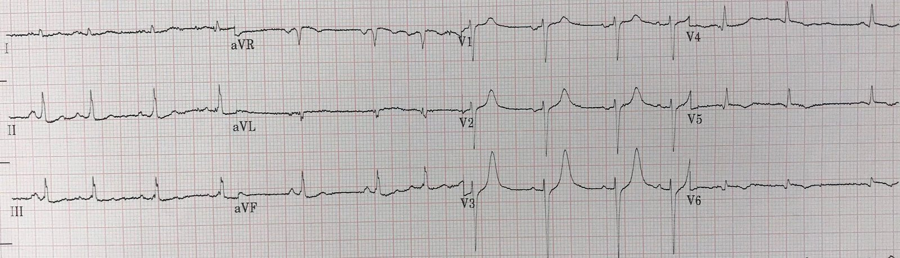
Đây là điện tâm đồ của một OMI thành sau được ghi sau tái tưới máu. Sóng T tái tưới máu thành sau.
Ca này đã bị bỏ sót nhưng cuối cùng động mạch tự mở thông. V1-V3 cho thấy sóng T tái tưới máu thành sau. V4-V6 là các chuyển đạo phía sau, có STE và sóng T đảo ngược. Đây KHÔNG phải sóng T de Winter. Chúng quá hẹp.
Một nam giới đầu 40 tuổi đau ngực: STD ở V1-V4, nhưng chuyển đạo phía sau âm tính

Đây là điện tâm đồ ghi sau khi mở thông động mạch của một OMI thành sau (sau tái tưới máu). Sóng T khá lớn và dương, nhưng ngay cả ở đây cũng không nên nhầm với sóng de Winter, nhất là khi đây là sau khi mở thông chỗ tắc động mạch mũ đoạn gần (cấp máu cho thành sau). Sóng T tái tưới máu thành sau.
Cũng quá hẹp để là sóng de Winter